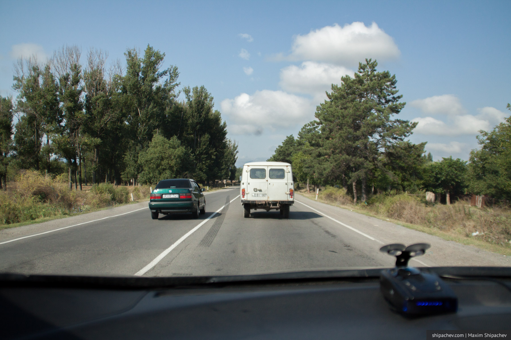

Дорожное движение в Грузии нас удивило ещё во время первого визита. Вернее удивило не само дорожное движение — оно как раз типично для кавказских государств — любопытно было наблюдать за ролью в дорожном движении дорожной полиции, аналога нашей ГИБДД.
Как известно, одной из бесспорных заслуг бывшего грузинского президента Михаила Саакашвили стала реформа дорожной полиции. Летом 2004 года она была полностью расформирована по причине нецелесообразности постепенных изменений. В августе 2004 года Грузия увидела новую дорожную полицию. Штат ведомства был обновлён на 80%.
Тех, кто брал взятки незамедлительно увольняли и осуждали на срок до 10 лет, в то же время средняя заработная плата полицейского была значительно увеличена и составила около $400 (при средней заработной плате в $200). В обновлённую полицию принципиально не брали тех, кто работал в правоохранительных органах раньше. Уровень доверия к полиции за последующие 3 года вырос с 5% до 90%.
Сегодня самое современное здание в любой грузинской деревне — это отделение полиции. Их стены всегда стеклянные — полиция прозрачна. Полицейские машины в любое время суток ездят с включенными проблесковыми маячками на крыше и в радиаторной решётке.
Водят в Грузии, как и везде на Кавказе, дерзко. Мало кто смотрит в зеркала при манёврах, никто не пропускает пешеходов, разметка на дорогах присутствует, но носит, похоже рекомендательный характер. Путешественнику из российского села, думаю, может быть неуютно.
Но, если принять грузинские правила, становится понятно, что правила есть и они не хуже рекомендованных российской ГИБДД. За всё путешествие мы встретили только одно ДТП на трассе и ни одного в черте городов.
В это сложно поверить, но грузинская полиция не заинтересована в сборе штрафов, протоколов, или наличных денег с населения.
Полиции на дорогах хватает, можно даже иногда наблюдать как патруль выписывает кому-то штраф, но в целом её поведение вначале озадачивает. Вы можете обогнать патрульный автомобиль через сплошную, не создавая помех и проехать дальше. У российского сотрудника ГИБДД, уверен, на этом месте непроизвольно выделиться слюна. Стоящие на пригорке полицейские с радаром или камерой — нонсенс для Грузии. Да и как-то глупо, согласитесь, прятаться с огромной включенной мигалкой на крыше.
Такое поведение сотрудников грузинской ГИБДД объясняется просто. Полиция не заинтересована в сборе штрафов, протоколов, или наличных денег с населения. Российскому человеку это тяжело понять, но так бывает.

Тем не менее, штрафы за нарушение ПДД в Грузии всё-таки есть.
- Проезд на красный свет — GEL 30
- Пересечение сплошной линии, связанное с выездом на полосу, предназначенную для встречного движения — GEL 50
- Нарушение правил парковки — GEL 10
- Создание препятствий движению или аварийной ситуации — GEL 250
- Нарушение правил перевозки детей — GEL 40 (детей до 3 лет можно перевозить на коленях у взрослого пассажира)
- Непристёгнутый ремень безопасности — GEL 40
Один грузинский лари стоит примерно 30 рублей.
Штраф необходимо оплатить в течение 30 дней. Если не уложиться в этот срок к штрафу добавиться пеня
- штраф патруля в размере 10 и 20 лари - пени 150 лари
- на штрафы в размере 150, 200, 300 лари - пени 500 лари
Информация о штрафах сразу становится доступной на границе, поэтому, в случае неоплаты, там тоже могут возникнуть вопросы.
Кроме других водителей и пешеходов, которых никто на проезжей части не воспринимает всерьёз, на грузинских дорогах стоит опасаться коров. Нам, к примеру, однажды встретилась такая, лежавшая метров через 20 после въезда в тоннель. В случае ДТП с коровой виновным всегда является хозяин, но вряд ли вам от этого станет легче.
Если вы гражданин Грузии, что вряд ли, вам можно не возить с собой водительское удостоверение. Любой экипаж может проверить его наличие по удостоверению личности.
Ближний свет фар нужно включать только в тёмное время суток или в условиях недостаточной видимости (российские машины всегда изделека видны в потоке), а вот аналога ОСАГО в Грузии нет, поэтому будьте осторожны.